Who We Are
Since 1953, PTA Engineering has built a reputation on precision engineering, trusted client relationships, and a team-first culture that spans generations.
PTA Engineering has provided planning and design of mechanical and electrical systems for buildings, serving both regional and national clients. Our attention to detail has been recognized by clients and builders alike.
We engage in a broad range of commercial, institutional, industrial, and public projects. A significant portion of our work involves high-reliability MEP systems required for healthcare, data centers, research facilities, and food production.
"PTA Engineering's mission is simple – the success of our client's project."
Client project success is the heart of all we do. We are collaborative and responsive teammates who listen to understand the Owner's vision and stakeholder needs. Adaptable and results-driven, we frame your vision with the future of mechanical, electrical, plumbing, and technology systems in mind. We develop contract documents that work functionally and economically, making us your trusted advisors.
These aren't words on a wall. They're the standard we hold ourselves to – every project, every client, every day.
"Diligence is the foundation of trust. By showing up with consistency and care today, we deliver excellence tomorrow."
– PTA Engineering
Every aspect of our engineering services is approached with focused, detailed, and persistent effort. Our simple mission is the success of our client's projects.
"People don't care how much you know until they know how much you care."
– Theodore Roosevelt
PTA teammates are approachable, considerate, respectful, and composed. Professionally affable behavior builds the open, positive culture that bridges all client and team relationships.
"The price of greatness is responsibility."
– Winston Churchill
Our engineering services are systematic, process-oriented, and involve complex schedules. PTA teammates are accountable to themselves and to others – we do what we say we'll do.
"If you would attain to what you are not yet, you must always be displeased by what you are. For where you are pleased with yourself, there you have remained. Keep adding, keep walking, keep advancing."
– Saint Augustine of Hippo
PTA teammates embrace change, seek overall growth, and actively support the growth of the people around them. The firm grows because our people grow.
73 years of trusted engineering
In 1953, Kent Kucheman, a University of Akron electrical engineering graduate and WWII Army medic, partnered with Harold Howard to launch Howard and Kucheman Engineering. Both founders began their careers as electrical estimators for local contractors, where they learned a lesson that became PTA's foundation: thoughtful, clear, and well-organized design and bid documents win the trust of clients and contractors. After Howard's unexpected passing in 1957, Joe Varvaro stepped in.
In 1973, Kucheman and Varvaro purchased a century-old home at 481 N. Cleveland-Massillon Road and converted it into office space, moving from their Western Avenue location. That building became the heart of the firm's identity and a symbol of their commitment to Akron. By 1974, the firm had grown from two people to five, establishing the footprint and discipline that has defined PTA for seven decades.
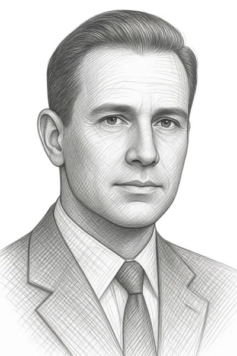
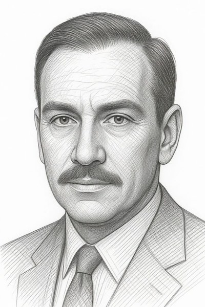
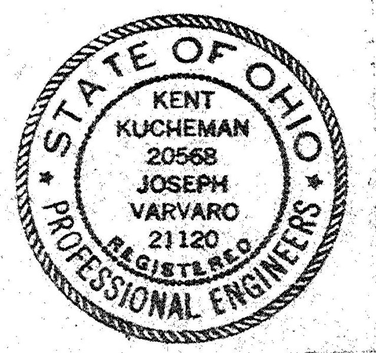
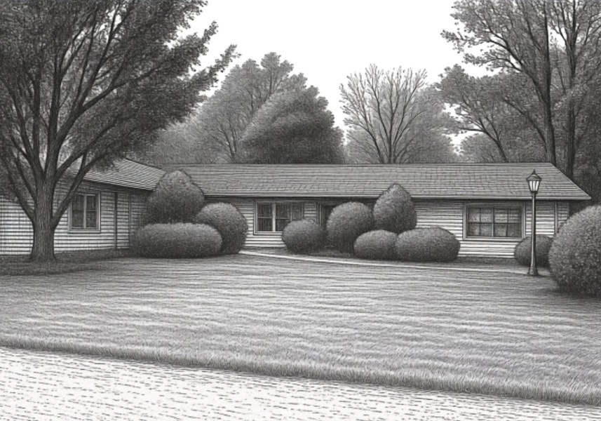
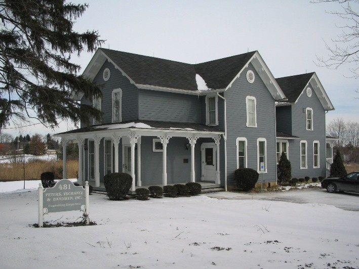
A thoughtful design philosophy centered on clarity, and a home that became the firm's identity.
A full-service MEP firm with deep expertise, a growing national portfolio, and a platform built for continued growth.
Jim Peters, another University of Akron graduate, joined the team in 1975. In 1981, the firm became Kucheman, Varvaro & Peters. That same year, Dave Tschantz brought his experience in design and construction from Goodyear's corporate engineering department to the growing firm. Joe Varvaro retired in 1984, and in 1986, the firm became Kucheman, Peters & Tschantz, Inc. When Kent Kucheman retired in 1987, he left behind a legacy of disciplined design. In 1996, Peters and Tschantz established The Kucheman and Varvaro Scholarship in Electrical Engineering to honor the firm's founders and ensure their values would shape the next generation of engineers. The firm keeps a close relationship with The University of Akron and other universities, mentoring engineering students year-round as one way to grow organically with young talented staff.
The firm made a pivotal strategic decision by adding mechanical engineering to become a full-service MEP firm in January 2000. Pat Klanac joined in 2002 to manage the growth of the mechanical engineering services. With continued growth, the firm moved in 2005 to a larger space, its current home, Suite 300 at 275 Springside Drive. In 2007, the firm became Peters, Tschantz & Associates, Inc., and Klanac, Mike Casseday, and Brian Holloway were formally introduced as associates. Dave Tschantz and Jim Peters retired at the end of 2015 and beginning of 2016 respectively.
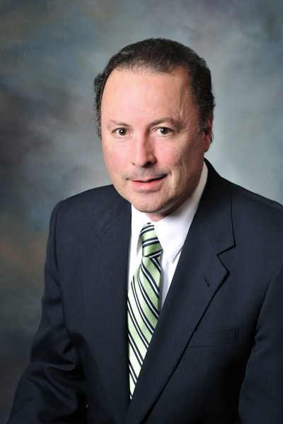
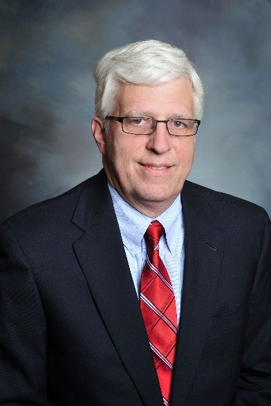
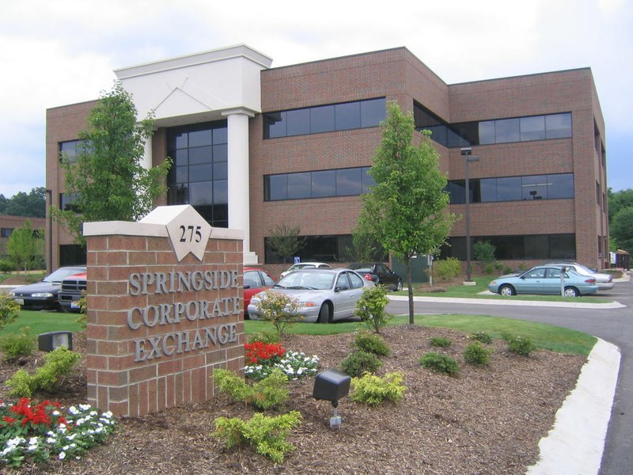
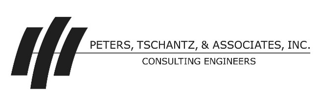
In early 2016, Pat Klanac and Mike Casseday took ownership and the firm rebranded as PTA Engineering, Inc., a name that honored its past and signaled its evolution. They translated the founders' engineering practice into a modern philosophy that guided every project and relationship. During this era, PTA formalized its Core Values: Diligent, Professionally Affable, Accountable, and Growth-Oriented. Committed to servant leadership, the owners identified the next group of associates to carry forward the firm's mission. PTA expanded its national work to serve multiple Fortune 100 companies across the commercial, mission critical, and industrial markets.
In 2023, PTA celebrated seven decades of serving clients in Northeast Ohio and across the country with a special 70th anniversary recognition.
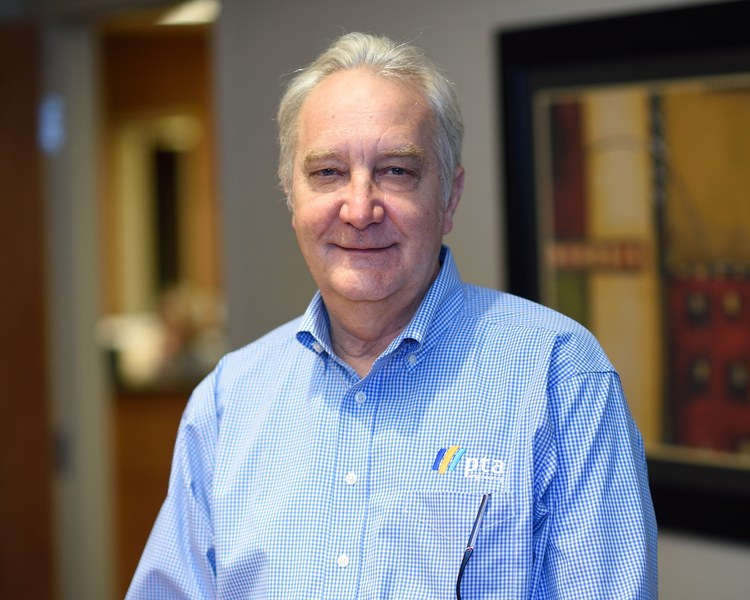
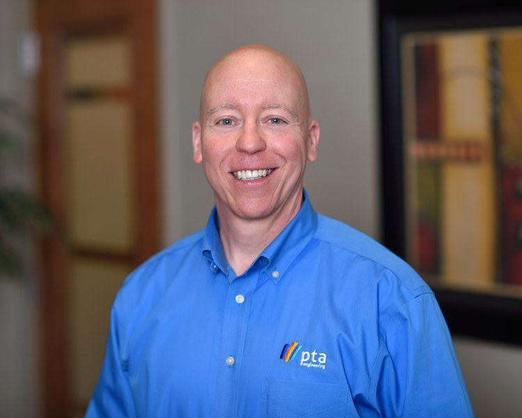
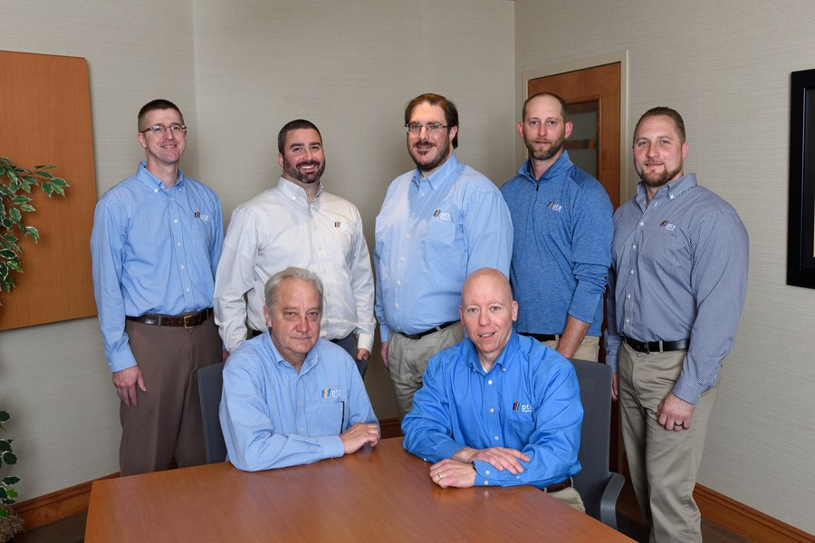
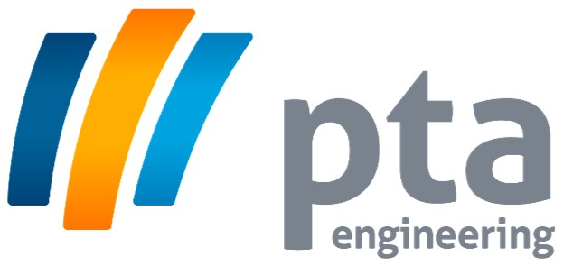
A rebranded firm with a clear identity, defined core values, and 70 years of engineering excellence to build upon.
A firm positioned as trusted advisors, investing in people, culture, and relationships for the next 70 years.
At the end of 2023, Mike Casseday retired after decades of practicing engineering, marking a milestone transition. At the start of 2024, Jeff Cerveny, Matt Sejba, Jon Jennings, and Brian Makan became partners alongside Pat Klanac, five principals united by the same philosophy that has defined PTA since 1953. In 2025, the firm completed a modernization of its Springside Drive office, investing in the workspace to reflect the culture, professionalism, and collaboration PTA brings to every project.
Today, PTA is deepening its healthcare expertise, strengthening long-standing client relationships, and building a culture where every engineer is developed in alignment with the firm's mission. Project success is at the heart of all we do. PTA achieves solutions that work functionally and economically to ultimately become trusted advisors for our clients.
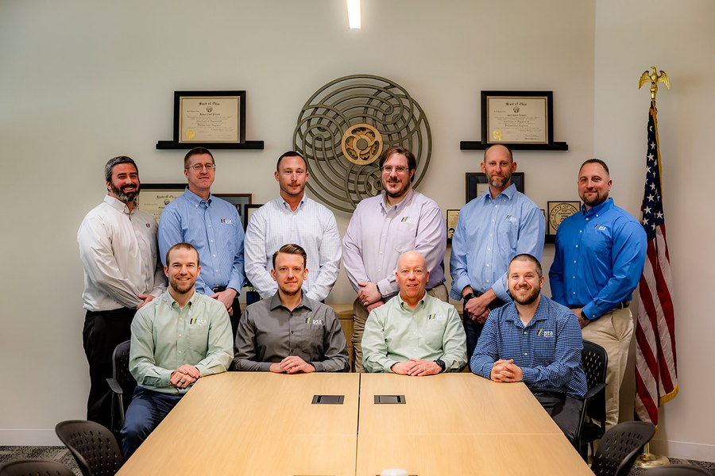
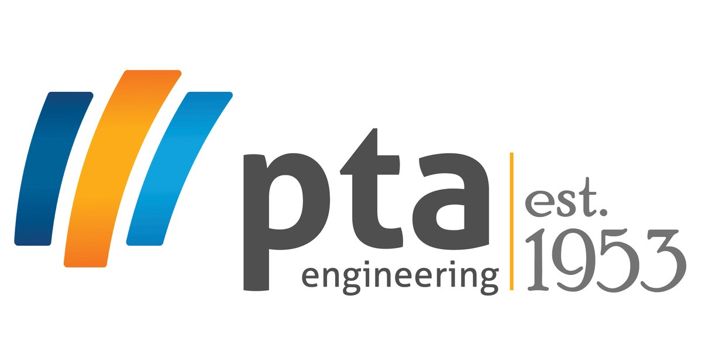
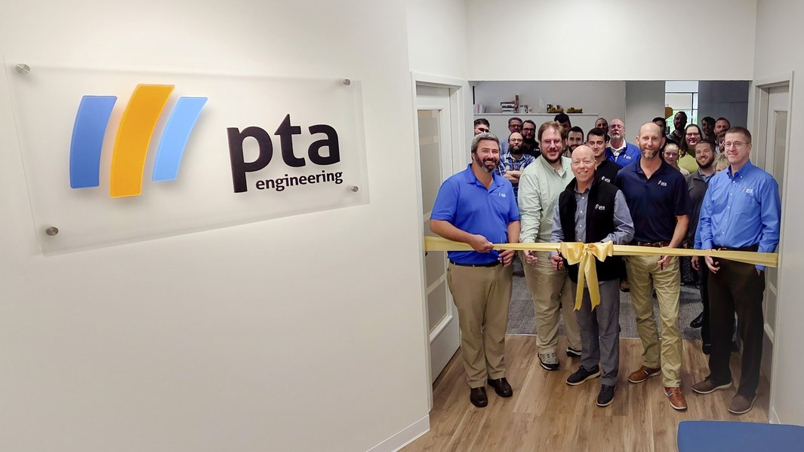